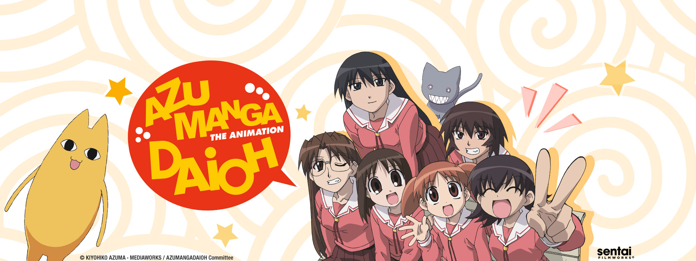

About Azumanga Daioh: the Animation
ㅤㅤㅤAzumanga Daioh: the Animation is an anime series based off of the manga “Azumanga Daioh”, with the title being a reference to the author’s name Kiyohiko Azuma and the magazine it was serialised in Dengeki Daioh, resulting in the author's name being fused with the term manga giving you “Azumanga” and being paired with “Daioh”. The series itself is a slice of life comedy where you follow the funny and exciting everyday lives of a group of highschool girls. Azumanga Daioh has a very diverse cast when it comes to their different personalities and quirks that all of the characters provide. With Azumanga Daioh, it's hard to pinpoint who the main character of the series is because there isn’t really one main character in the series, but rather the main group of characters. The story for the most part is mostly episodic, but one thing that is not episodic in the series is that throughout the series, the seasons and school semesters go by and the series has a real sense of time passing unlike some other series such as “The Simpsons” or “Family Guy” for examples. The show excels with its comedy by being consistently funny, having well thought out jokes, and great at timing for comedic effect. The original sound track for the show is also really unique and makes the show even more enjoyable to watch.
Important Characters of Azumanga Daioh
ㅤㅤㅤAyumu Kasuga, more commonly referred to as “Osaka”, is a transfer student who comes from the Osaka region of Japan and ends up going to an unnamed school somewhere in Tokyo Japan. Osaka got her nickname from her classmates on her first day of school, and the name has stuck with her for so long in the series that her fellow classmates all forget Osaka’s real name. Osaka is quite slow, bad at concentrating, tends to doze off often, and is notably one of the three members of the “Knucklehead Trio” (the Knucklehead Trio is a trio of three of characters who receive really bad grades on tests and homework). Chiyo Mihama, usually referred to as “Chiyo-chan”, is a child prodigy who skipped five grades to attend high school. Chiyo can sometimes struggle to fit in with her classmates, but they are all nice to her for the most part and all of the main characters in the series seem to think that Chiyo’s dad is this weird egg-shaped yellow cat thing. Chiyo is probably most known for her iconic pigtails and there are many gags involving her pigtails. Tomo Takino, or just Tomo, is very energetic, competitive, and loves to tease Chiyo. Tomo is also notably a member of the “Knucklehead Trio”. Koyomi Mizuhara, known as “Yomi”, is a childhood friend of Tomo, and is a very rational person. Yomi gets pretty good grades and is a decent athlete, but she is very self conscious of her weight and is always trying to lose weight. Sakaki is very gifted when it comes to both academics and athleticism, and is also tall and seen as cool among her classmates. Sakaki loves cute animals (especially cats), but whenever she tries to pet a cat, they always either run or bite her hand. Also Sakaki is very shy and does not talk a lot, but most don’t notice that she is just shy because they think she looks cool. Kagura is a very athletic student who is on the swim team and always has a tan from being outside a lot, but is lacking when it comes to doing well on tests. Kagura sees Sakaki as an athletic rival and is also a member of the “Knucklehead Trio”.
- Steins;Gate Fan Wiki
- Steins;Gate (TV Series) Wikipedia
- Azumanga Daioh Wikipedia
- Azumanga Daioh Character Wikipedia